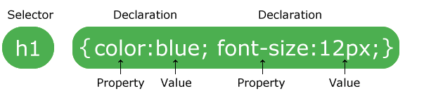
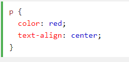

Un conjunto de reglas CSS consta de un selector y un bloque de declaración:
En el siguiente ejemplo todas
elementos serán-centro alineados, con un color de texto de color rojo:
 "Intentalo tu mismo"selectores CSS se utilizan para "encontrar" (o seleccionar) elementos HTML en función de su nombre del elemento, ID, clase, atributo, y mucho más.
El selector de elementos
12863862187361278361263921786378 "
"
En el siguiente ejemplo todas
elementos serán-centro alineados, con un color de texto de color rojo:
"Intentalo tu mismo"